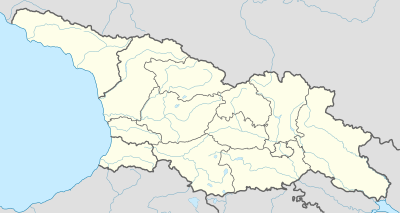

საქართველოს ისტორია მრავალსაუკუნოვანი და მდიდარია, რაც ამ პატარა ქვეყნის გეოგრაფიულმა მდებარეობამაც განაპირობა. საქართველო მდებარეობს ევროპისა და აზიის გზაჯვარედინზე, რასაც მნიშვნელოვანი გავლენა ჰქონდა მის პოლიტიკურ, ეკონომიკურ და კულტურულ განვითარებაზე.
საქართველოში ადამიანთა ცხოვრების კვალი ჯერ კიდევ პალეოლითის ხანიდან არსებობს. ანტიკური ხანისთვის აქ უკვე ჩამოყალიბებული იყო ძლიერი სახელმწიფოებრივი ერთეულები: კოლხეთი და იბერია. კოლხეთი ხშირად იხსენიება ბერძნულ წყაროებში და დაკავშირებულია მითიურ არგონავტებთან და ოქროს საწმისის ლეგენდასთან.
